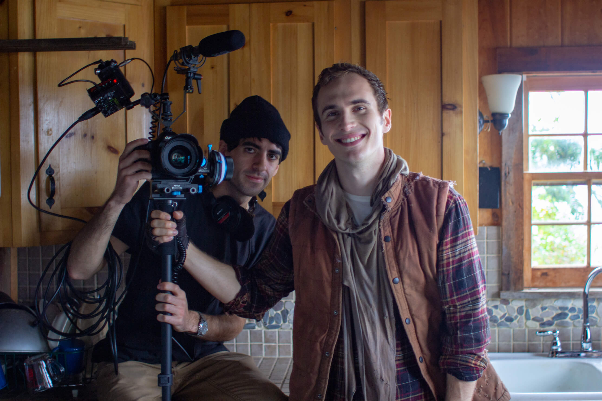

Personalized Tutoring
Learn remotely or in person

I teach one on one personalized courses for individuals and groups interested in learning video production and photography techniques. I work remotely using screen sharing and voice/video chat. We look at your work from your computer on your schedule. Please contact me at cowpervideos@gmail.com to set up a lesson and tell me about what you're interested in learning.
Areas of Expertise:
Cinematography and Video Production
DSLR, Magic Lantern, Blackmagic Cinema, Canon, Sony, GoPro, 16mm film, and Super 8 film.
Video Editing
Adobe Premiere, Adobe After Effects, Final Cut Pro, and DaVinci Resolve.
Audio Production and Mixing
Podcast production, 5.1 surround and stereo recording, mixing, sweetening, and editing techniques in Adobe Audition.
Photography
DSLR photography, Adobe Lightroom, Adobe Photoshop, digital raw processing, 35mm, medium format, and large format film (various cameras and processing techniques).
Archiving and Preservation
Digital transfers of film, VHS, etc. Preservation and archiving techniques for archaic media formats.
Live Streaming and Broadcast Engineering
DIY studio construction, live streaming of audio and video for web, television, theatre, and conferences (Blackmagic ATEM, Ustream, Mediasite, YouTube, Facebook).
If you don't see what you're looking for just email and ask!